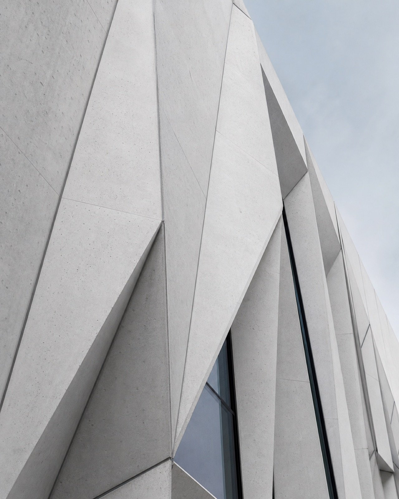
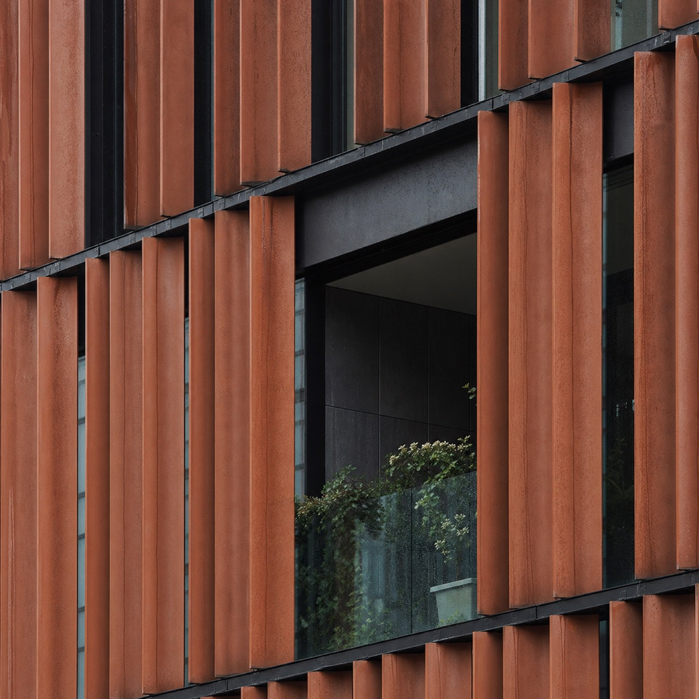
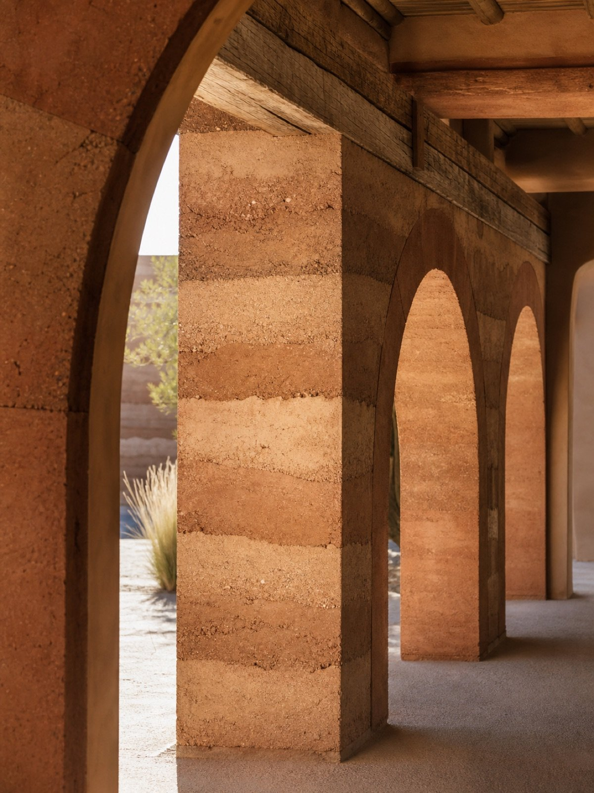
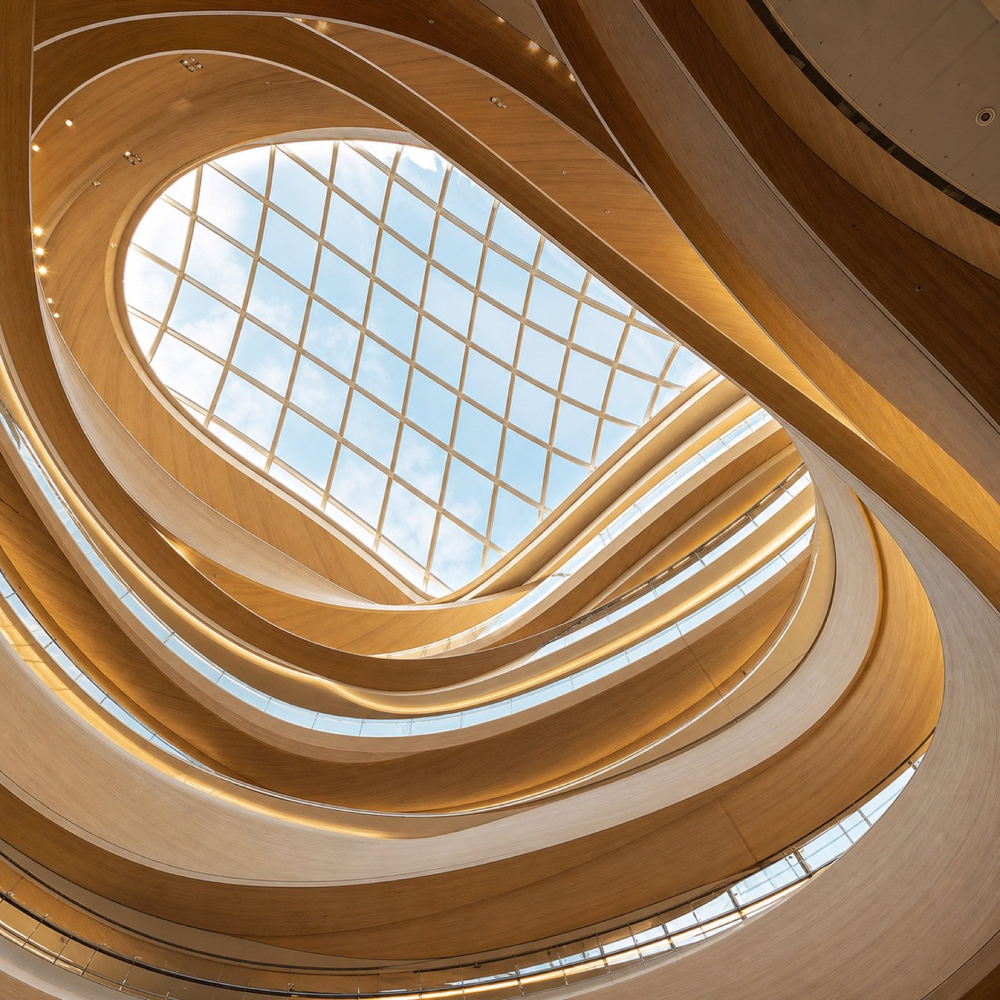
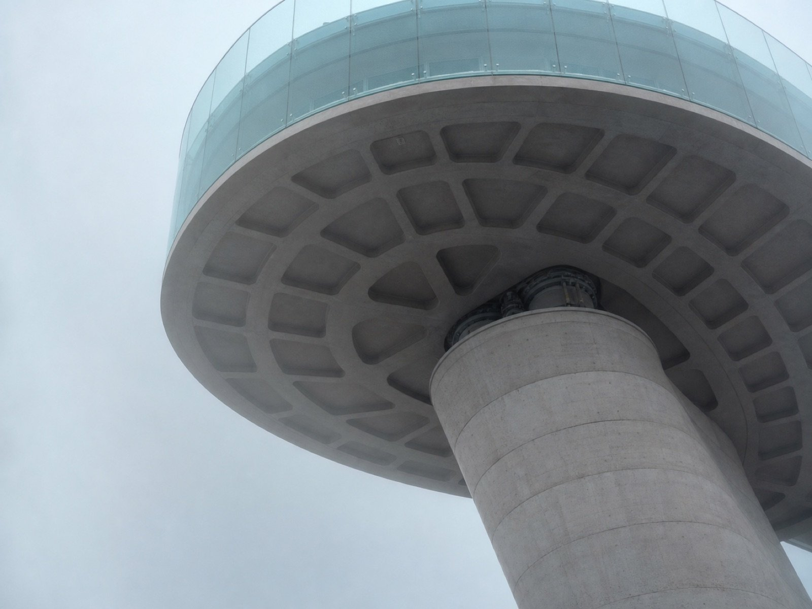
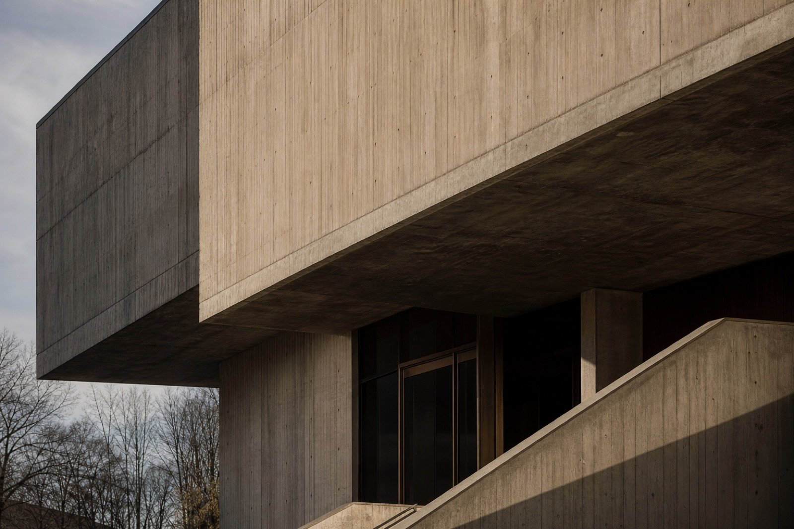

Grid Architects · Architecture studio
Buildings drawn from the structure out.
Museums, towers, bridges and campuses — ten recent projects across Lisbon, Dubai, Seoul and Oslo.
Scroll
Selected works
Ten buildings. One grid.
Every project starts as a modular grid that fixes columns, voids and façade lines. Open any building for the idea behind it, or hover a tile to flip it.

01 Pleated Museum Explore more → 02
Tension Span
Explore more →
02
Tension Span
Explore more →
 03
Glass Monolith
Explore more →
03
Glass Monolith
Explore more →

04 Terracotta Weave Explore more → 05
Parametric Canopy
Explore more →
05
Parametric Canopy
Explore more →

06 Earth Campus Explore more →
07 Helix Atrium Explore more →
08 Observation Spire Explore more →
09 Civic Mass Explore more → 10
Metal Overture
Explore more →
10
Metal Overture
Explore more →